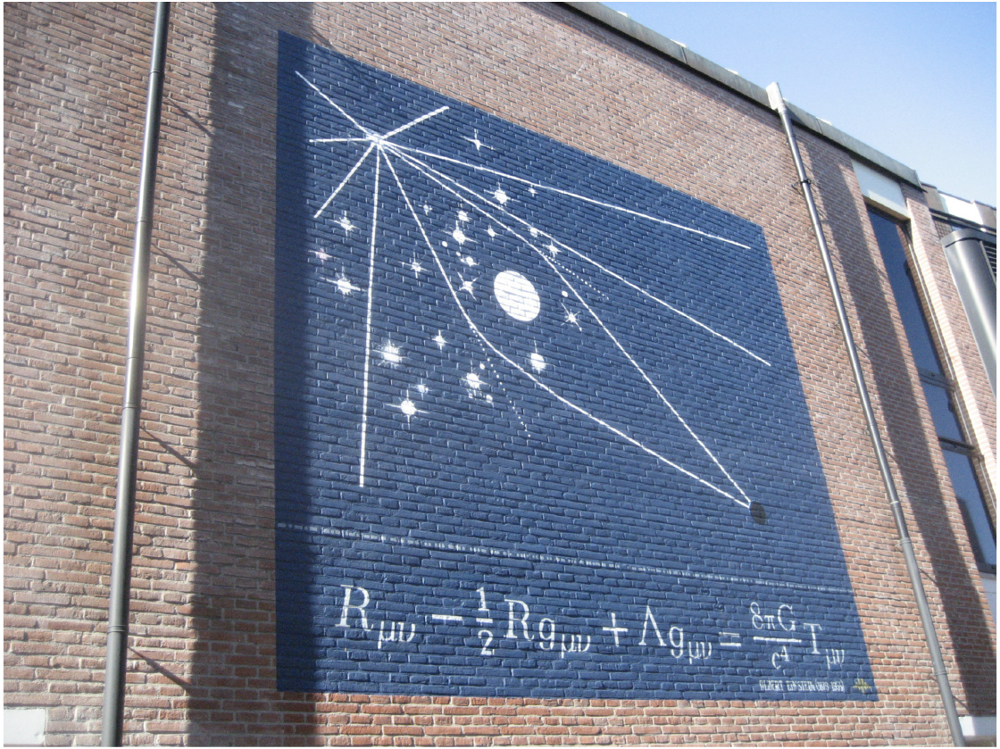
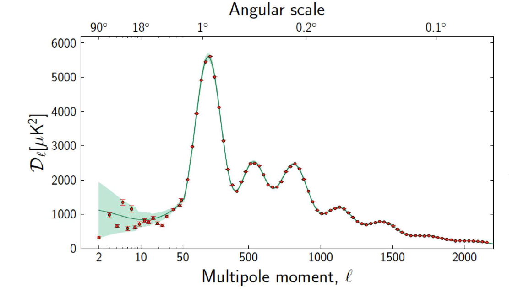
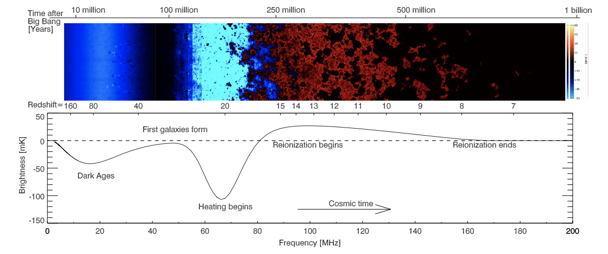

<!DOCTYPE html>
<html lang="en">
  <head>
    <meta charset="utf-8" />
    <meta name="viewport" content="width=device-width, initial-scale=1.0, maximum-scale=1.0, user-scalable=no" />

    <title>鱼鱼聊鱼粥</title>
    <link rel="stylesheet" href="dist/reveal.css" />
    <link rel="stylesheet" href="dist/theme/black.css" id="theme" />
    <link rel="stylesheet" href="plugin/highlight/zenburn.css" />
	<link rel="stylesheet" href="css/layout.css" />
	<link rel="stylesheet" href="plugin/customcontrols/style.css">


    <script defer src="dist/fontawesome/all.min.js"></script>

	<script type="text/javascript">
		var forgetPop = true;
		function onPopState(event) {
			if(forgetPop){
				forgetPop = false;
			} else {
				parent.postMessage(event.target.location.href, "app://obsidian.md");
			}
        }
		window.onpopstate = onPopState;
		window.onmessage = event => {
			if(event.data == "reload"){
				window.document.location.reload();
			}
			forgetPop = true;
		}

		function fitElements(){
			const itemsToFit = document.getElementsByClassName('fitText');
			for (const item in itemsToFit) {
				if (Object.hasOwnProperty.call(itemsToFit, item)) {
					var element = itemsToFit[item];
					fitElement(element,1, 1000);
					element.classList.remove('fitText');
				}
			}
		}

		function fitElement(element, start, end){

			let size = (end + start) / 2;
			element.style.fontSize = `${size}px`;

			if(Math.abs(start - end) < 1){
				while(element.scrollHeight > element.offsetHeight){
					size--;
					element.style.fontSize = `${size}px`;
				}
				return;
			}

			if(element.scrollHeight > element.offsetHeight){
				fitElement(element, start, size);
			} else {
				fitElement(element, size, end);
			}		
		}


		document.onreadystatechange = () => {
			fitElements();
			if (document.readyState === 'complete') {
				if (window.location.href.indexOf("?export") != -1){
					parent.postMessage(event.target.location.href, "app://obsidian.md");
				}
				if (window.location.href.indexOf("print-pdf") != -1){
					let stateCheck = setInterval(() => {
						clearInterval(stateCheck);
						window.print();
					}, 250);
				}
			}
	};


        </script>
  </head>
  <body>
    <div class="reveal">
      <div class="slides"><section  data-markdown><script type="text/template">

# 🐟🐟聊🐟🥣


清华天协 学术部  

清华大学天文系 

赵思逸

2022年秋季学期


</script></section><section ><section data-markdown><script type="text/template">
<!-- .slide: data-auto-animate="true" -->

## 活动简介

- 清华天协学术部 本学期特色微沙龙
	- 第一次 微·专业课层次·系列·沙龙——请多指教～
	- 主讲人带领的自由讨论
	- 希望讨论可以占到一半时间（及以上？）
- 天文系研究生课程 “物理宇宙学”
	- 拓展讨论？
- 每次1.5-2小时，穿插 “Dandan’s Crazy Friday” 讨论内容 
	- 有穿插的时候会提前做时间分配并通知
	- 第一次在下周
</script></section><section data-markdown><script type="text/template">
<!-- .slide: data-auto-animate="true" -->

## 活动简介

- 清华天协学术部 本学期特色微沙龙
- 天文系研究生课程 “物理宇宙学”
- 每次1.5-2小时，穿插 “Dandan’s Crazy Friday” 讨论内容 
- 前置：大学物理
	- 希望可以做到“零基础”……
- **注重图象，但不止图象**
	- 事实上主要内容都是非常抽象的公式……
	- 所以要强调“物理图象”
	- *抽象和复杂的只是“语言”，“所指”应该是可理解的。*
</script></section><section data-markdown><script type="text/template">
### 大纲

一种熬粥方法……
- 基本集中于“如何加水”，
- 也讨论各种各样的“米”和“豆子”——*欢迎补充专题内容～*
- 每个专题1-2周，期中、期末周暂停。

<p style="line-height: 0" class="reset-paragraph image-paragraph"></img></p>


</script></section></section><section ><section data-markdown><script type="text/template">
# cosmology in a nutshell
<mark>_an incomplete and personal biased perspective_</mark> 

- homogenous
- inhomogeneous 
</script></section><section data-markdown><script type="text/template">

<split even>
<p style="line-height: 0" class="reset-paragraph image-paragraph"></img></p>


- inhomogeneous 
	- at small scales  
	- beautiful and complete
	- abundant information
- homogenous 
	- at large scales  (~100Mpc)
	- rather simple ...
	- *we will focus here as beginning.*

- (JWST deep field)
</split>
</script></section><section data-markdown><script type="text/template">
### Our address in the Universe (丹丹供图) 

<p style="line-height: 0" class="reset-paragraph image-paragraph"></img></p>


^Question: the satellite galaxies of MW have an anisotropic spacial distribution? Why?
</script></section><section data-markdown><script type="text/template">
<p style="line-height: 0" class="reset-paragraph image-paragraph"></img></p>

observe from the last 'second'  (wikipedia)
</script></section></section><section  data-markdown><script type="text/template">
### Natural Unit

<mark>（开始抽象（X）</mark>
`$$\hbar = c = k_{\mathrm{B}} = 1$$`

- 自然单位制、量纲分析对于理论物理来说很重要，怎么熟悉都不为过——需要多练习同时加深理解。


</script></section><section ><section data-markdown><script type="text/template">
## 时空结构：Why?

<p style="line-height: 0" class="reset-paragraph image-paragraph"></img></p>

(丹丹的课件)
</script></section><section data-markdown><script type="text/template">
## 时空结构

*我们的宇宙是广义相对论的一个解。*

- spacetime -> GR 

- 0 order / at background level -> FRLW metric 
	- 宇宙学原理 (space)
		- homogenous 
		- isotropic

- evolution -> Friedmann equation 


</script></section><section data-markdown><script type="text/template">
### GR: from metric to field equation
<p style="line-height: 0" class="reset-paragraph image-paragraph"></img></p>


- Metric / 度规
	- encode the information of spacetime 
- Einstein field equation / 场方程
	- “物质告诉时空如何弯曲”
^ discuss: geodesic and field equation are independent?...
</script></section><section data-markdown><script type="text/template">
#### FRLW metric 

`$$
\begin{aligned} 
d s^2 &\equiv g_{\mu \nu}(x) d x^\mu d x^\nu \\
&= - d t^2 + a^2(t)\left[\frac{d r^2}{1-K r^2}+r^2 d \Omega\right]
\end{aligned} 
$$`

- `$a(t)$` , 膨胀或收缩
- 既适用于平直时空，也适用于弯曲时空 (K)  
	- eg:  inflation 期间的 de Sitter space
- isotropic
- homogenous (in case K=0, -1, +1?)
</script></section><section data-markdown><script type="text/template">
### Friedmann equation 

FRLW metric + Einstein field equation => Friedmann equations  

`$$
\left(\frac{\dot{a}}{a}\right)^2=\frac{8 \pi G}{3} \rho
$$`

`$$
\frac{\ddot{a}}{a} + \frac{1}{2} \left(\frac{\dot{a}}{a}\right)^2 = -4\pi G P 
$$`


- The 2 equations is not independent with *energy conservation* equation.

- radiation / matter / Dark energy dominate 
	- different stages of our Universe
</script></section><section data-markdown><script type="text/template">
### observation of cosmology 


<split even>

distances 
- *comoving distance* 
- angular distance
- luminosity distance 
- *Horizon*

times
- *conformal time*
- age
- look-back time 

</split>

</script></section></section><section ><section data-markdown><script type="text/template">
## thermal history

- inflation (?)
- <mark>radiation era</mark> 
- reheating / hot Big Bang
- "first three minutes"
- BBN
- <mark>matter era</mark> 
- CMB
- dark age
- Cosmic Dawn: First stars and galaxies 
- Reionization 
- <mark>dark energy era</mark> 
- We are here! 
</script></section><section data-markdown><script type="text/template">
<p style="line-height: 0" class="reset-paragraph image-paragraph"></img></p>

(丹丹的课件)
^discuss: inflaton looks like dark energy..
</script></section></section><section ><section data-markdown><script type="text/template">
## Inhomogeneous Universe

- initial perturbation 
- gravitational evolution 
</script></section><section data-markdown><script type="text/template">
### Inflation
<p style="line-height: 0" class="reset-paragraph image-paragraph"></img></p>


- *perturbed* initial condition 
	- quantum fluctuation -> classical fluctuation  ^discuss: 这一过程尚不清楚，几乎是一次“量子测量”。
	- Horizon
- Inflation itself ?
	- *cosmology beyond standard model*
	- Why we need Inflation?
	- inflaton potential and interactive: slow-roll single field and beyond.. ^（根据现场讨论改进）


</script></section><section data-markdown><script type="text/template">
### structure formation 
perturbation theory

super-horizon, sub-horizon

Euler perturbation, Lagrangian perturbation, 

Zel'dovich approximation, 

growth factor, transform function 

dark matter / radiation / baryon dominate...
</script></section><section data-markdown><script type="text/template">
### structure formation: simulation

<p style="line-height: 0" class="reset-paragraph image-paragraph"></img></p>

(丹丹的课件) ^吐槽：星系是一些贴图（雾）
</script></section></section><section ><section data-markdown><script type="text/template">
## 宇宙学探针 tracers

-> constrain cosmology parameters 

- CMB 
- LSS 
- 21cm
</script></section><section data-markdown><script type="text/template">
### CMB： 宇宙学“第一探针”

<p style="line-height: 0" class="reset-paragraph image-paragraph"></img></p>


- global signal and observation history 
- multipole analysis -> power spectrum 
	- BAO
- beyond horizon: SW effect...

^大家可以看Wayne Hu的tutorial，有（功率谱随宇宙学模型参数变化的）动图，比如 http://background.uchicago.edu/~whu/intermediate/clcurvature.html 
</script></section><section data-markdown><script type="text/template">
### 宇宙学探针：galaxy survey

星系在高密度区形成。

- 3D information! 
- maybe significantly biased...
</script></section><section data-markdown><script type="text/template">
### 宇宙学探针：21cm


<p style="line-height: 0" class="reset-paragraph image-paragraph"></img></p>


- also 3D 
- overcome selection bias 
- can be very clear at Dark Ages...
- hard to observe ...


</script></section><section data-markdown><script type="text/template">
### 宇宙学探针：……

- 中微子背景辐射？
- 原初引力波背景？

^ Question: 哪个更难探测？
</script></section></section><section ><section data-markdown><script type="text/template">
## 统计学方法

### Statistics 

- Power Spectrum 
- High order statistic 
	- skewness, kurtosis...
	- Bispectrum, Trispectrum...
	- ...

- Minkowski functional
- Scattering transform function (in machine learning?)

- ...
</script></section><section data-markdown><script type="text/template">
### forecast

- Fisher 
	- ^需要给出parameters 的 fiducial value，所以比较依赖于先验

-  MCMC 
	- ^在整个参数空间取样，不太依赖于先验，类似投针法测`$\pi$`（2米乘2米的正方形内接半径1米的圆形，随机投针看有多少比例落入圆形内……）

- ..
</script></section></section><section  data-markdown><script type="text/template">
# cosmology in a nutshell

<split even>
<p style="line-height: 0" class="reset-paragraph image-paragraph"></img></p>


- homogenous
	- spacetime 
	- expansion history 
	- thermal history 

- inhomogeneous 
	- initial condition 
		- -> inflation / fluctuations 
	- structure formation 
		- -> gravity / perturbation 
	- how to observe inhomo. 
		- -> tracers + Statistics 

- (丹丹的课件)
- ^ summary , important!
</split>
</script></section><section  data-markdown><script type="text/template">
# 再会，谢谢所有的🐟
</script></section></div>
    </div>

    <script src="dist/reveal.js"></script>

    <script src="plugin/markdown/markdown.js"></script>
    <script src="plugin/highlight/highlight.js"></script>
    <script src="plugin/zoom/zoom.js"></script>
    <script src="plugin/notes/notes.js"></script>
    <script src="plugin/math/math.js"></script>
	<script src="plugin/mermaid/mermaid.js"></script>
	<script src="plugin/chart/chart.min.js"></script>
	<script src="plugin/chart/plugin.js"></script>
	<script src="plugin/menu/menu.js"></script>
	<script src="plugin/customcontrols/plugin.js"></script>

    <script>
      function extend() {
        var target = {};
        for (var i = 0; i < arguments.length; i++) {
          var source = arguments[i];
          for (var key in source) {
            if (source.hasOwnProperty(key)) {
              target[key] = source[key];
            }
          }
        }
        return target;
      }

	  function isLight(color) {
		let hex = color.replace('#', '');

		// convert #fff => #ffffff
		if(hex.length == 3){
			hex = `${hex[0]}${hex[0]}${hex[1]}${hex[1]}${hex[2]}${hex[2]}`;
		}

		const c_r = parseInt(hex.substr(0, 2), 16);
		const c_g = parseInt(hex.substr(2, 2), 16);
		const c_b = parseInt(hex.substr(4, 2), 16);
		const brightness = ((c_r * 299) + (c_g * 587) + (c_b * 114)) / 1000;
		return brightness > 155;
	}

	var bgColor = getComputedStyle(document.documentElement).getPropertyValue('--r-background-color').trim();

	if(isLight(bgColor)){
		document.body.classList.add('has-light-background');
	} else {
		document.body.classList.add('has-dark-background');
	}

      // default options to init reveal.js
      var defaultOptions = {
        controls: true,
        progress: true,
        history: true,
        center: true,
        transition: 'default', // none/fade/slide/convex/concave/zoom
        plugins: [
          RevealMarkdown,
          RevealHighlight,
          RevealZoom,
          RevealNotes,
          RevealMath.MathJax3,
		  RevealMermaid,
		  RevealChart,
		  RevealCustomControls,
		  RevealMenu,
        ],

		mathjax3: {
			mathjax: 'plugin/math/mathjax/tex-mml-chtml.js',
		},

		customcontrols: {
			controls: [
			]
		},
		menu: {
			loadIcons: false
		}
      };

      // options from URL query string
      var queryOptions = Reveal().getQueryHash() || {};

      var options = extend(defaultOptions, {"width":1600,"height":1200,"margin":0.04,"controls":true,"progress":true,"slideNumber":true,"transition":"slide","transitionSpeed":"normal"}, queryOptions);
    </script>

    <script>
      Reveal.initialize(options);
    </script>
  </body>
</html>
